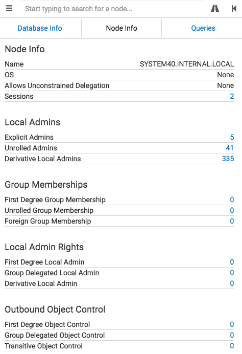

Clicking on a computer node will populate the Node Info tab with information about that computer:

Node Info
-Name: This is the name of the node, and is in fully qualified format.
-OS: The OS for the computer. This information is not currently gathered by the ingestor.
-Allows Unconstrained Delegation: Whether the computer allows unconstrained delegation. This information is not currently gathered by the ingestor.
-Sessions: These are the user sessions on the computer the ingestor identified during data collection.
Local Admins
-Explicit Admins: These are the explicit users and groups that have local administrator rights on the system. This is the equivalent of running net localgroup administrators on the host.
-Unrolled Admins: These are all of the effective groups and users that have administrator rights on the system. This is the equivalent of running Get-NetLocalGroup -ComputerName computername -Recurse
-Derivative Local Admins: These are all the effective groups and users that have a derivative admin style attack path to the computer.
Group Memberships
-First Degree Group Membership: These are the groups that the computer belongs to.
-Unrolled Group Memberships: These are all of the effective group memberships the computer has.
-Foreign Group Memberships: These are all of the foreign groups that the computer belongs to.
Local Admin Rights
-First Degree Local Admin: These are the computers where the computer object is added explicitly as a local administrator on a system.
-Group Delegated Local Admin Rights: These are the computers that the computer gains administrator privileges to based on delegated group rights.
-Derivative Local Admin Rights: These are the computers the computer can gain administrator rights to by impersonating a user currently using a computer the user has administrator privileges to, regardless of how deep this chaining goes.
Outbound Object Control
-First Degree Object Control: These are the other objects that this computer has direct control over.
-Group Delegated Object Control: These are the objects that this computer has control over via security group delegation.
-Transitive Object Control: These are the objects that this computer has an ACL-only attack path to.